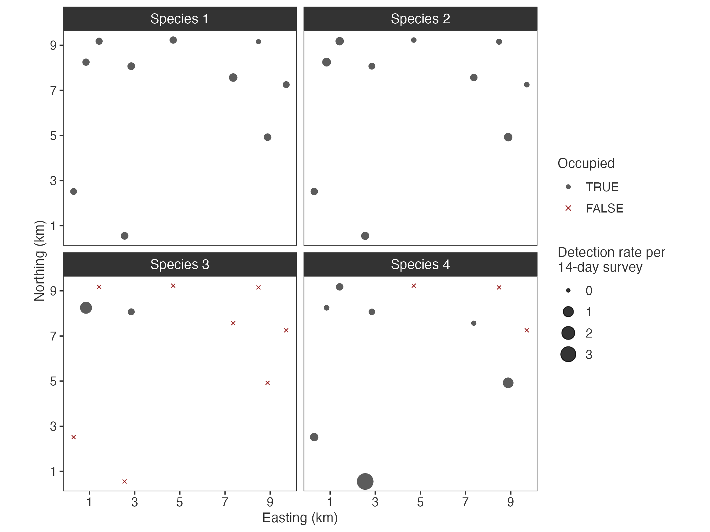
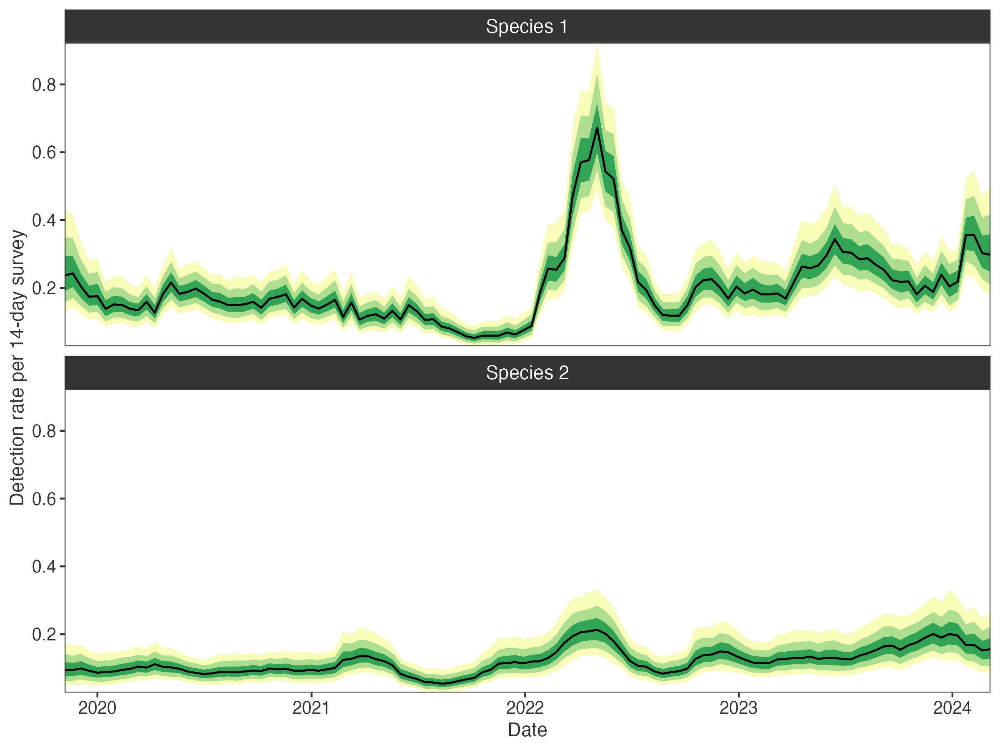
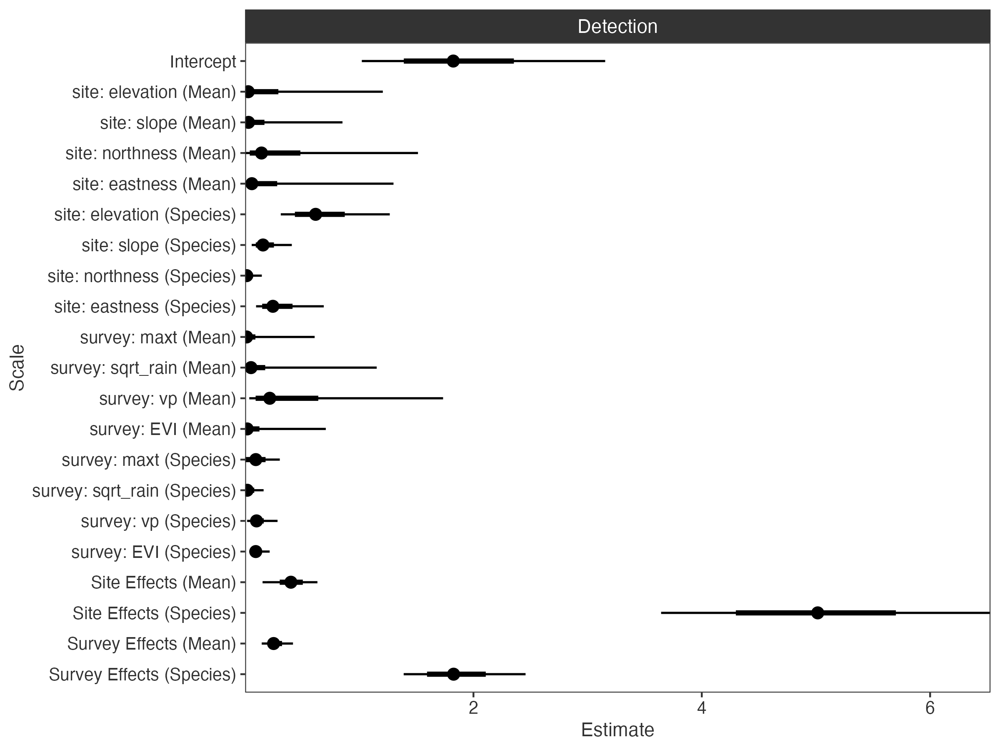

occARU fits Bayesian (multispecies) occupancy models with count observation models to autonomous recording unit (ARU) data like those derived from camera traps and passive acoustic monitoring. It implements hierarchical species-level random effects with spatial and temporal Gaussian processes, variance decomposition via global-local shrinkage priors, and is built on Stan via cmdstanr.
Installation
Install occARU from GitHub:
# install.packages("remotes")
remotes::install_github("mhollanders/occARU")occARU requires CmdStan >= 2.36.0. If you have not used Stan before, run:
This checks your C++ toolchain and installs CmdStan automatically.
Getting started
1. Prepare data
make_data() accepts deployment and observation data frames following the camtrapDP format:
data <- make_data(
deployments = deployments,
observations = observations,
failures = failures # also accepts failure dates per site
survey_length = 14, # aggregate to 2-weekly survey periods
thin_minutes = 30 # thin observations to 30 minutes, retaining highest count
detection_site_predictors = site_predictors,
survey_predictors = survey_predictors
)
data
#> ── occARU data ─────────────────────────────────────────────────────
#> Sites (I): 30
#> Surveys (J): 114
#> Species (S): 6
#> Detections: 11463
#> Site coordinates: yes
#> Deployment span: 2019-11-06 to 2024-03-06
#> Survey length: 14 days
#> Thinning: 30 minutes
#> Occupancy site predictors: 0
#> Detection site predictors: 5
#> Continuous: 3
#> Categorical: 1
#> Ordinal: 1
#> Survey predictors: 4
#> Continuous: 3
#> Categorical: 0
#> Ordinal: 12. Fit a model
# set some priors for hyperparameters (unspecified use defaults)
priors <- set_priors(
psi_bar = c(1, 2), # Beta(1, 2) for mean occupancy
mu_W = c(3, 0, 1) # Student-t+(3, 0, 1) for log detection variance
)
#> ── occARU priors ───────────────────────────────────────────────────────────
#> psi_bar: Beta(1, 2)
#> mu_bar: Gamma(1, 1)
#> psi_W: Student-t+(3, 0, 1)
#> mu_W: Student-t+(3, 0, 1)
#> psi_theta: Gamma(1, 1)
#> ...
# fit the model
fit <- fit_model(data, prior = priors)By default this fits a model with spatial and temporal Gaussian processes, Dirichlet variance decomposition, and Poisson observation model, initialised with Pathfinder across 4 chains. See ?fit_model and ?set_priors to customise the model structure and priors.
3. Check some output
# site occupancy and detection rates
plot_sites(fit)
# temporal detection trends
plot_surveys(fit, species = c("Species 1", "Species 2"))
Key design choices in occARU are hierarchical multispecies spatial and temporal Gaussian processes, implemented with sum-to-zero constraints for identifiability and orthogonal projection to retain fixed effects. Interspecific correlations are estimated for responses to predictors and random effects.
# variance partitions
plot_partitions(fit, scales = TRUE)
Global-local shrinkage priors are used to handle model complexity through simplex decomposing variances of the occupancy and detection linear predictors.
4. Interrogate
# use PSIS-LOO-CV on the site-by-species level log likelihood
fit$loo("log_lik2") # log_lik2 uses Monte Carlo integration of random effects
# check prior sensitivy using power-scaling
priorsense::powerscale_plot_dens(fit$draws("log_lik", "lprior", "psi_bar"))
# posterior predictive checking of aggregated site-by-species counts
bayesplot::pp_check(apply(data$y, c(1, 3), sum) |> c(),
yrep = fit$draws("Qrep", format = "draws_matrix"),
group = rep(attr(data, "species"), each = data$I),
fun = "ppc_rootogram_grouped")The model stores marginal site-by-species log likelihoods (log_lik), the log prior density (lprior), and posterior predictions for the full detection history (yrep) or aggregated site-by-species counts (Qrep). Optionally, Monte Carlo integration over site and observation-level random effects produces marginal log likelihoods (log_lik2) with improved PSIS-LOO-CV performance.
Learn more
-
vignette("model")— full model description -
?fit_model,?make_data,?set_priors